Les 10 meilleurs bouchons lyonnais en 2026
Il n'y a pas un label de bouchon lyonnais, il y en a deux, concurrents, et plusieurs des maisons les plus recommandées de la ville n'en portent aucun. Voici dix adresses, et de quoi lire les autocollants sur la vitrine.
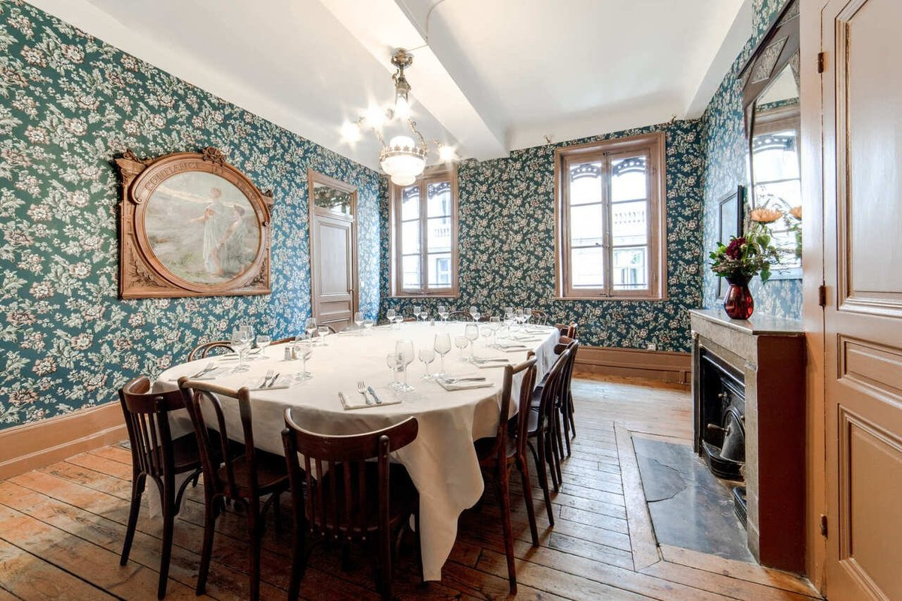
Le meilleur bouchon lyonnais de l'année ? Le Café Lobut, à Villeurbanne, lauréat du prix Florent-Dessus 2025. Mais la vraie réponse est ailleurs : il n'existe pas un meilleur bouchon, il en existe une vingtaine de sérieux, chacun gardien d'une cuisine généreuse et sans prise de tête, celle des mères lyonnaises et des canuts. Voici les dix qui l'incarnent le mieux, et surtout de quoi comprendre ce que valent les étiquettes collées sur leurs vitrines.
L'essentielCe qu'il faut savoir avant de réserver
- Deux labels concurrents, et non un seul : les Authentiques Bouchons Lyonnais depuis 1997, et Les Bouchons Lyonnais depuis 2012. Ils ne recouvrent pas les mêmes maisons.
- 23 établissements labellisés par le second, une vingtaine par le premier. L'appellation « bouchon » n'est, elle, protégée par rien.
- Quatre des dix maisons de cette liste ne portent aucun label, dont Le Garet et Chez Hugon, qui comptent parmi les plus recommandées de la ville.
- Le tablier de sapeur est du gras-double, de la panse de bœuf panée, et non de la cervelle de veau. L'erreur circule beaucoup.
Un bouchon, deux labels, et beaucoup de confusion
L'appellation « bouchon lyonnais » n'est protégée par aucun texte. N'importe quel restaurant peut l'inscrire sur sa devanture, servir des lasagnes et s'en tenir là. C'est ce vide juridique qui a fait naître, non pas une, mais deux certifications privées, longtemps rivales.
La première, les Authentiques Bouchons Lyonnais, est décernée depuis 1997 par l'Association de défense des bouchons lyonnais. Elle distingue les maisons jugées les plus typiques et les plus anciennes, et se reconnaît à un autocollant représentant Gnafron, marionnette lyonnaise au verre toujours plein, sur fond de nappe à carreaux. Une vingtaine de maisons le portent. C'est cette association qui remet chaque année le prix Florent-Dessus du meilleur bouchon.
La seconde, Les Bouchons Lyonnais, est une association loi 1901 doublée d'un label, créée en novembre 2012 à l'initiative de la Commission Tourisme de la CCI de Lyon, avec ONLYLYON Tourisme et Congrès. Elle compte 23 établissements en avril 2026 et est présidée par Olivier Canal, de La Meunière. Sa création a été vécue comme une déclaration de guerre par l'association historique ; les deux ont fini par se rapprocher, et ont organisé ensemble en octobre 2023 ce qu'elles ont appelé le plus grand bouchon du monde.
Retenez ceci : un autocollant sur la vitrine est un bon signe, son absence n'est pas une condamnation. Le label est un engagement volontaire, et plusieurs maisons excellentes ne l'ont jamais demandé.
| Secteur | Établissements |
|---|---|
| Lyon 1er | La Meunière, La Tête de Lard, Le Casse Museau |
| Lyon 2e | Café Comptoir Abel, Le Café du Jura, Le Bistrot d'Abel, Le Bouchon des Cordeliers, Le Comptoir de Léa, Le Poêlon d'Or, Le Vivarais, Les Culottes Longues, Bouchon Palais Grillet |
| Lyon 3e | Daniel & Denise, Le Val d'Isère, Le Bouchon des Artistes |
| Lyon 4e | Daniel & Denise Croix-Rousse |
| Lyon 5e | Daniel & Denise Saint-Jean, L'Auberge des Canuts, Les Fines Gueules, Les Lyonnais |
| Lyon 6e | L'Antr'O Potes, Le Bouchon Sully |
| Région lyonnaise | Le Bistrot du Marché, Chez Nénette, aux Chères |
Les mères lyonnaises, et d'où vient tout ça
L'histoire remonte au XIXe siècle. Des cuisinières de maisons bourgeoises, congédiées ou installées à leur compte, ouvrent de petites tables où elles servent ce que la boucherie ne vend pas : les abats, les bas morceaux, la charcuterie. Ce sont les mères lyonnaises, et elles inventent une cuisine d'économie et de générosité, nourrissante et bon marché, pour les canuts, ces ouvriers de la soie des pentes de la Croix-Rousse.
Le mot « bouchon », lui, ne vient pas du bouchon de bouteille. On le rattache le plus souvent à la « bousche », le bouquet de branchages qu'on accrochait au-dessus de la porte des cabarets pour signaler qu'on y servait à boire. La filiation est disputée, comme souvent en étymologie ; ce qui ne l'est pas, c'est que le bouchon est né d'une cuisine de pauvres devenue un patrimoine.
Notre sélection : dix bouchons
-
01
Café Comptoir Abel
Lyon 2e · L'institution depuis 1928
Les Bouchons LyonnaisAuthentiques Bouchons Lyonnais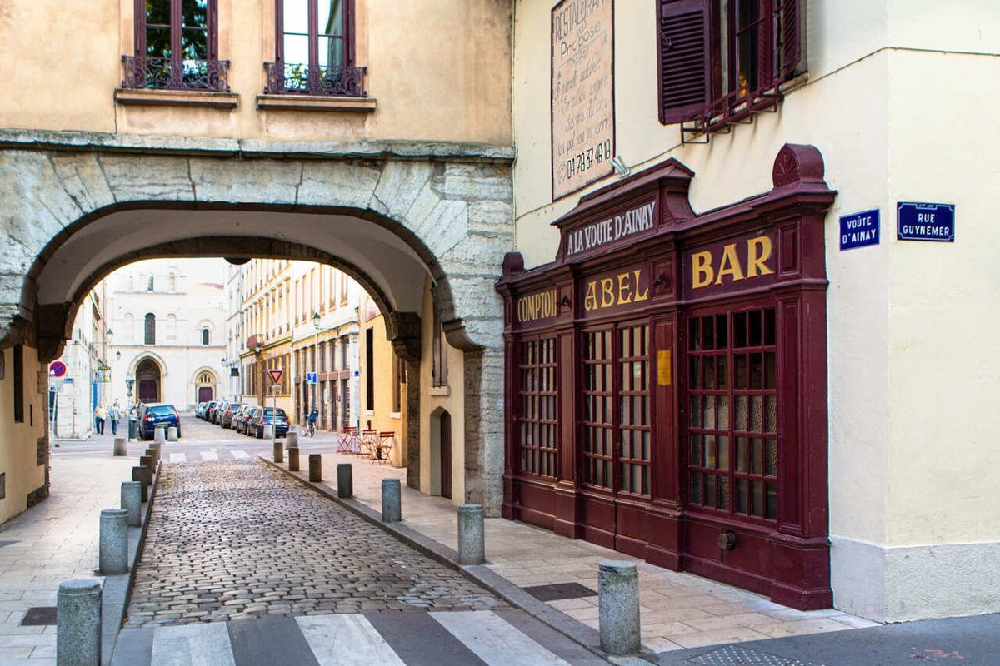
La devanture d'Abel, à l'angle de la voûte d'Ainay et de la rue Guynemer. Photo Office de tourisme de Lyon. Entrer chez Abel, c'est franchir une porte qui n'a pas changé depuis presque un siècle. Les murs jaune pâle, les photos sépia des canuts, le comptoir en zinc patiné par les coudes de générations de Lyonnais : tout respire l'authenticité sans effort. On s'y sent attendu, pas jugé.
La cuisine est généreuse, sans détour. Quenelles de brochet aériennes, salade lyonnaise qui croustille, andouillette qui grésille à la poêle. Ce qui plaît : l'absence totale de calcul, le pot lyonnais rempli sans compter, les portions qui rassasient. Ce qui peut décevoir : le service est vite débordé aux heures de pointe, et les toilettes sont rustiques.
Pour qui ? Les amoureux du Lyon authentique, les visiteurs en quête de vrai, et les habitués qui y reviennent depuis vingt ans.
- Adresse25 rue Guynemer, Lyon 2e
- Ouvertdepuis 1928
- BudgetOrdre de grandeur : 35 à 40 €
- RéservationFortement conseillée
-
02
Daniel & Denise Saint-Jean
Lyon 5e · La cuisine d'un Meilleur Ouvrier de France
Les Bouchons LyonnaisAuthentiques Bouchons Lyonnais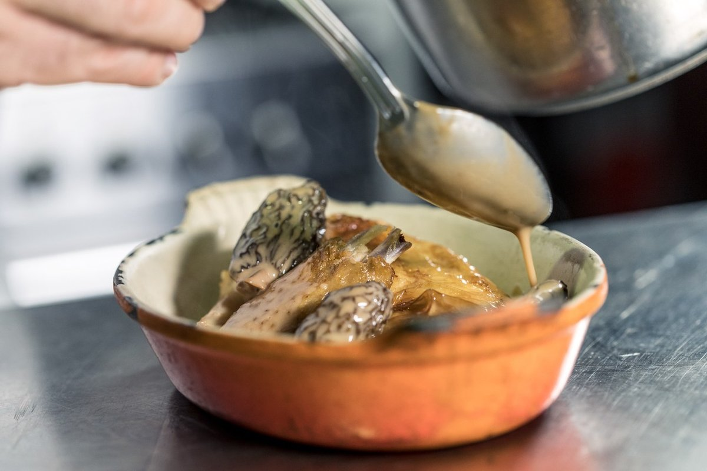
En cuisine chez Daniel & Denise Saint-Jean. Photo Office de tourisme de Lyon. Joseph Viola, Meilleur Ouvrier de France, a repris ce bouchon du Vieux-Lyon avec une idée simple : respecter la tradition en la sublimant. Murs de pierre, poutres apparentes, nappes à carreaux rouges, le décor coche toutes les cases. Mais c'est l'assiette qui parle.
Les quenelles sont des nuages, le tablier de sapeur croustille dehors et fond dedans, la cervelle de canut est un hymne à la simplicité. Ce qui plaît : la maîtrise technique au service de la tradition, les portions généreuses, l'accueil. Ce qui peut décevoir : les prix sont un cran au-dessus de la moyenne des bouchons, et le quartier est très touristique.
Pour qui ? Ceux qui veulent du bouchon sans compromis, avec une touche de métier en plus.
- Adresse36 rue Tramassac, Lyon 5e
- ChefJoseph Viola, MOF
- BudgetOrdre de grandeur : 45 €
- RéservationObligatoire
-
03
Le Garet
Lyon 1er · Le bouchon des Lyonnais, derrière l'Hôtel de Ville
Aucun des deux labels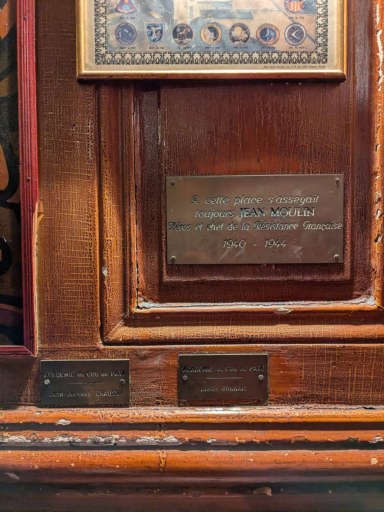
Le Garet, rue du Garet, derrière l'Hôtel de Ville. Photo Romainbehar, CC0, via Wikimedia Commons. Le Garet a ouvert en 1920, rue du Garet, derrière l'Hôtel de Ville, dans le 1er et non dans le Vieux-Lyon comme on le lit souvent. Jean Moulin y avait ses habitudes pendant la guerre, et sa place est aujourd'hui marquée d'une plaque de laiton. Murs couverts de photos jaunies, comptoir de bois usé, clients qui se connaissent : la maison n'a pas de site internet, et n'en a jamais eu besoin.
En cuisine, Emmanuel Ferra sert le répertoire sans y toucher : salade lyonnaise, harengs pommes à l'huile, tablier de sapeur, quenelle sauce Nantua, andouillette, tête de veau sauce ravigote. Le menu Gnafron, à 32 €, aligne les classiques. Ce qui plaît : l'ambiance de vrai bouchon, le rapport qualité prix, le sentiment d'être un habitué dès la première visite. Ce qui peut décevoir : un cadre très rustique, presque austère, et une carte qui bouge peu.
Pour qui ? Les puristes, les Lyonnais de souche, et ceux qui veulent la cuisine des canuts sans artifice.
- Adresse7 rue du Garet, Lyon 1er
- Ouvertdepuis 1920
- ChefEmmanuel Ferra
- MenuMenu Gnafron à 32 €
-
04
La Meunière
Lyon 1er · La maison du président du label
Les Bouchons LyonnaisAuthentiques Bouchons Lyonnais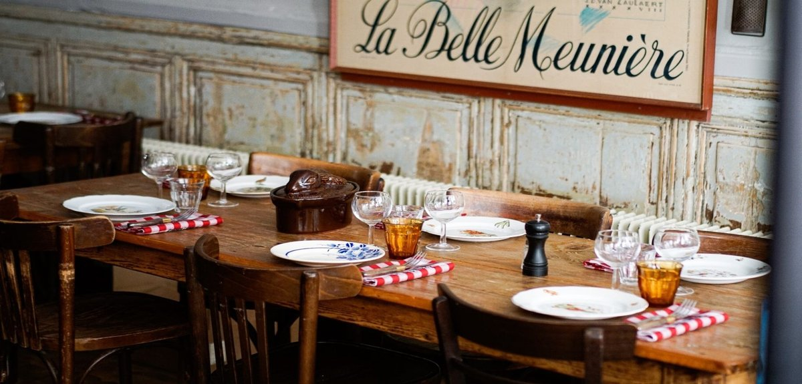
La salle de La Meunière et son affiche de la Belle Meunière. Photo La Meunière. La Meunière tourne comme une horloge depuis bientôt cent ans, en pleine Presqu'île. Nappes à carreaux, chaises de bois, pot lyonnais qui ne désemplit pas. La maison est tenue par Olivier Canal en cuisine et Annick Roman en salle ; Canal préside aujourd'hui l'association Les Bouchons Lyonnais, ce qui lui vaut d'être regardée de près par la profession.
La cuisine suit la même logique : pâté en croûte, œufs meurette, oreiller de la Belle Meunière, quenelle de brochet à la sauce écrevisses, tête de veau sauce gribiche. La maison sert aussi le mâchon, ce casse-croûte lyonnais du matin, du mardi au samedi, sur réservation. Ce qui plaît : la fiabilité absolue, l'ambiance chaleureuse sans être étouffante, les portions. Ce qui peut décevoir : peu d'innovation, un cadre un peu figé.
Pour qui ? Les amateurs de tradition pure, et ceux qui veulent être certains de ce qu'ils vont trouver dans l'assiette.
- Adresse11 rue Neuve, Lyon 1er
- Maison deOlivier Canal et Annick Roman
- MâchonDu mardi au samedi matin, sur réservation
- BudgetOrdre de grandeur : 35 €
-
05
Le Bouchon des Filles
Lyon 1er · L'hommage aux mères lyonnaises
Aucun des deux labels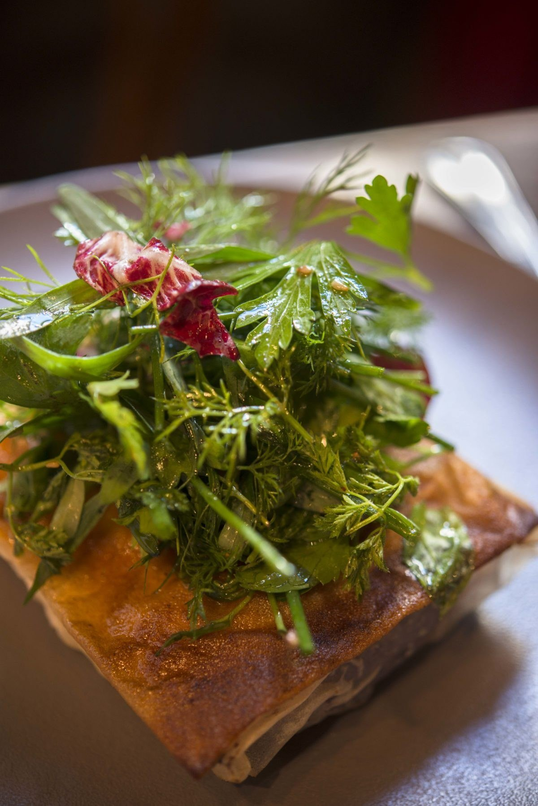
Une assiette du Bouchon des Filles. Photo Le Bouchon des Filles. Le Bouchon des Filles est un clin d'œil à l'histoire. Isabelle et Laura, formées au Café des Fédérations, l'ont ouvert il y a une quinzaine d'années au pied de la Croix-Rousse, dans un immeuble du XVIIIe, en hommage aux mères lyonnaises qui ont inventé cette cuisine.
La cuisine est celle des mères : quenelles, tablier de sapeur, cervelle de canut, andouillette, avec une générosité qui vient du service en petites assiettes à partager. Ce qui plaît : l'histoire qu'on sent dans chaque plat, l'accueil sans détour. Ce qui peut décevoir : le cadre est moins « musée » que les autres, plus contemporain, ce qui déroute les puristes.
Pour qui ? Ceux qui aiment les histoires, et les amateurs de cuisine sincère qui se moquent des labels.
- Adresse20 rue Sergent-Blandan, Lyon 1er
- Maison deIsabelle et Laura
- MenusAutour de 30 €
- Téléphone04 78 30 40 44
-
06
Café Comptoir Lobut
Villeurbanne · Meilleur bouchon lyonnais 2025
Prix Florent-Dessus 2025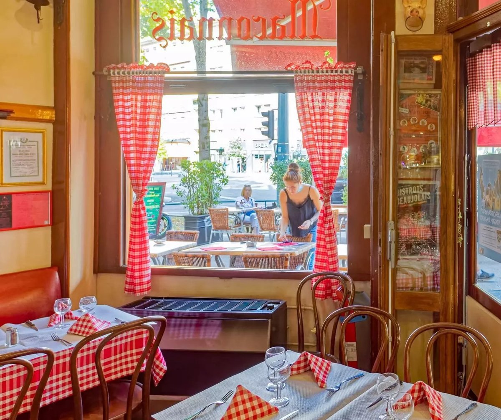
La salle du Café Lobut, rideaux à carreaux et chaises bistrot. Photo Café Lobut. Le Café Lobut a reçu le prix Florent-Dessus 2025, qui distingue le meilleur authentique bouchon lyonnais de l'année, décerné par l'association des Authentiques Bouchons Lyonnais. La maison n'est pas dans Lyon mais à Villeurbanne, cours Tolstoï, ce qui n'est pas la moindre de ses singularités.
L'histoire commence en 1949, quand André Lobut ouvre ce bistrot de quartier. Son fils lui succède jusqu'en 1995, puis Sandrine et Cyril Huit reprennent l'affaire en 2005 et la transforment en bouchon. La carte annonce grenouilles, andouillette au beaujolais, saint-marcellin croustillant et cervelle de canut. Ce qui plaît : la reconnaissance de la profession, l'ambiance de quartier. Ce qui peut décevoir : l'affluence depuis le prix, et un cadre moins historique que les maisons du centre.
Pour qui ? Ceux qui veulent goûter le lauréat de l'année, et qui acceptent de sortir de l'hypercentre.
- AdresseCours Tolstoï, Villeurbanne
- Ouvertdepuis 1949
- DistinctionPrix Florent-Dessus 2025
- BudgetOrdre de grandeur : 30 à 35 €
-
07
Chez Hugon
Lyon 1er · Les mêmes recettes depuis 1937
Aucun des deux labels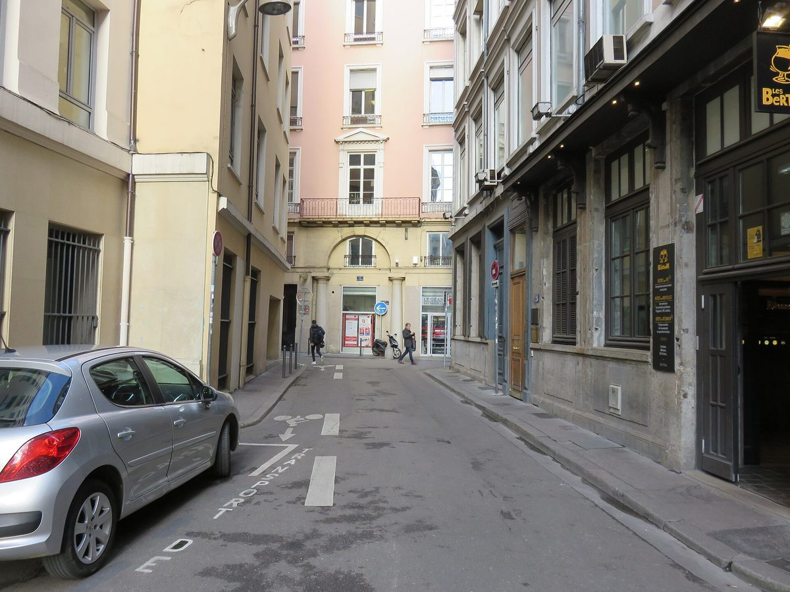
La rue Pizay, où Chez Hugon sert depuis 1937. Photo Sebleouf, CC BY-SA 4.0, via Wikimedia Commons. Chez Hugon tient la même carte depuis 1937, sur les mêmes nappes rouges et blanches. C'est une maison de famille, et cela se sent dès l'entrée : on y est accueilli comme chez quelqu'un, pas comme dans un commerce.
Gâteau de foies de volaille, quenelle de brochet, et surtout le poulet au vinaigre, qui est la signature de la maison. Ce qui plaît : la constance sur quatre-vingt-dix ans, le rapport qualité prix, le sentiment d'être dans un vrai bouchon. Ce qui peut décevoir : un cadre austère, un service qui peut être expéditif, et une salle très petite.
Pour qui ? Les puristes, les amateurs d'histoire, et ceux qui veulent goûter un poulet au vinaigre comme on n'en fait plus.
- Adresse12 rue Pizay, Lyon 1er
- Téléphone04 78 28 10 94
- Ouvertdepuis 1937
- BudgetOrdre de grandeur : 33 €
-
08
Le Poêlon d'Or
Lyon 2e · La cuisine généreuse d'Ainay
Les Bouchons LyonnaisAuthentiques Bouchons Lyonnais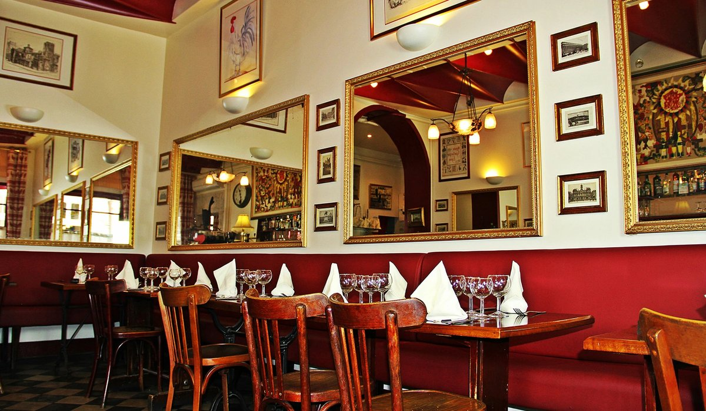
La salle du Poêlon d'Or, banquettes grenat et miroirs dorés. Photo Le Poêlon d'Or. Le Poêlon d'Or était un comptoir à vin fondé en 1860 ; il a commencé à dresser des tables entre les deux guerres. La salle, dans un immeuble inscrit, aligne banquettes grenat, miroirs dorés et sol en damier, dans un quartier d'Ainay plus bourgeois que canut.
Mickaël Lorini y sert les recettes des mères, avec la quenelle de brochet sauce écrevisses et le fond d'artichaut au foie gras en spécialités. Ce qui plaît : la salle, l'une des plus belles de cette liste, et la générosité des portions. Ce qui peut décevoir : un service vite débordé, et une carte qui bouge peu.
Pour qui ? Ceux qui ont faim, et les amateurs de cuisine sincère qui préfèrent éviter les rues à touristes.
- Adresse29 rue des Remparts d'Ainay, Lyon 2e
- ChefMickaël Lorini
- Menus34 à 43 €
- RelevéTarifs publiés par la maison
-
09
Le Bouchon Sully
Lyon 6e · Le bouchon d'un chef des Brotteaux
Les Bouchons LyonnaisAuthentiques Bouchons Lyonnais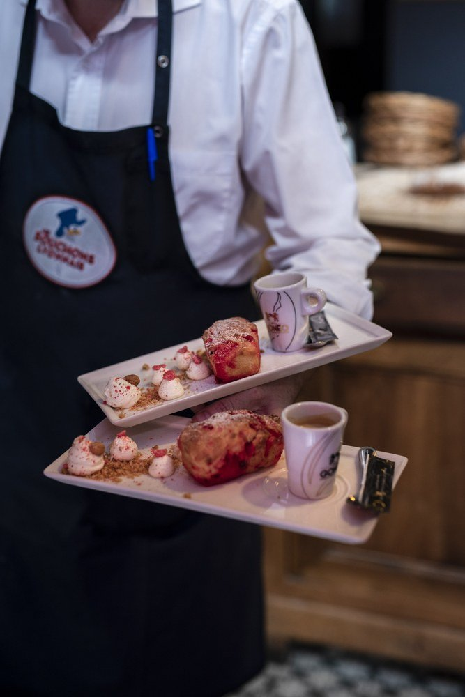
Au Bouchon Sully. L'écusson des Authentiques Bouchons Lyonnais est cousu sur le tablier. Photo Office de tourisme de Lyon. Le Bouchon Sully est le bouchon de Julien Gautier, le chef du M Restaurant voisin, ouvert en octobre 2014 dans le 6e. Le lieu a une histoire : avant d'être un bouchon, il fut Les Oliviers pendant quatorze ans, et bien avant cela le tout premier établissement de Mathieu Viannay, arrivé à Lyon en 1998.
La cuisine est un bouchon modernisé plutôt qu'un bouchon de musée : gâteau de foies de volaille, foie de veau en persillade, tête de veau sauce ravigote. Ce qui plaît : la précision d'un vrai cuisinier appliquée à des plats populaires, la salle confortable. Ce qui peut décevoir : le quartier des Brotteaux est loin de l'imagerie des canuts, et les puristes trouveront l'ensemble trop lisse.
Pour qui ? Ceux qui veulent la cuisine de bouchon avec le métier d'un chef, et les habitants de la rive gauche.
- Adresse20 rue Sully, Lyon 6e
- ChefJulien Gautier
- Ouvertdepuis octobre 2014
- BudgetOrdre de grandeur : 30 à 35 €
-
10
Les Adrets
Lyon 5e · Le bouchon de la rue du Bœuf
Aucun des deux labels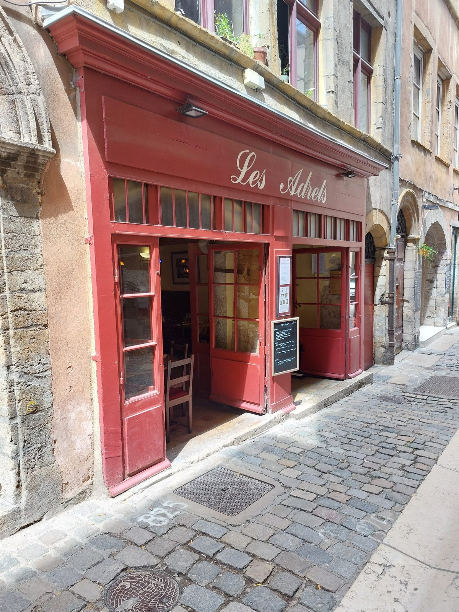
La devanture des Adrets, rue du Bœuf, dans le Vieux-Lyon. Photo Les Adrets. Les Adrets occupe une devanture rouge rue du Bœuf, l'une des plus belles du Vieux-Lyon, entre maisons Renaissance et traboules. Poutres apparentes, colonnes de pierre, une soixantaine de couverts : le décor est celui qu'on vient chercher ici.
La maison se présente comme un bouchon de nouvelle génération, et c'est exact : le jeune chef Guillaume Riva sert une cuisine plus travaillée que le répertoire habituel, tartelette de betterave au chèvre, soufflé de brochet sauce homardine. Ce qui plaît : le cadre, et une carte qui prend des risques. Ce qui peut décevoir : les puristes n'y retrouveront pas leur tablier de sapeur, et la rue est un couloir à touristes.
Pour qui ? Ceux qui visitent le Vieux-Lyon et veulent y manger correctement, ce qui n'est pas si simple.
- Adresse30 rue du Bœuf, Lyon 5e
- ChefGuillaume Riva
- MenusFormule 24 € le midi, menu 33 € le soir
- RelevéTarifs publiés par la maison
Les plats qu'on vient chercher
- Quenelle de brochet. Une boule aérienne de chair de brochet, de panade et d'œuf, pochée puis gratinée, servie avec une sauce Nantua à base d'écrevisses et de beurre. C'est le plat qui juge un bouchon : ratée, elle est caoutchouteuse ; réussie, elle se tient à la fourchette et fond ensuite.
- Tablier de sapeur. Du gras-double, c'est-à-dire de la panse de bœuf, mariné vingt-quatre heures au vin blanc et à la moutarde, pané puis frit au beurre. Les alvéoles du bonnet retiennent la panure, ce qui donne ce croustillant caractéristique. Servi avec une sauce gribiche et des pommes de terre. Ce n'est pas de la cervelle de veau, contrairement à ce qu'on lit souvent.
- Salade lyonnaise. Frisée, lardons, croûtons, œuf poché. Simple, et donc sans échappatoire : tout se joue sur la cuisson de l'œuf et sur le gras du lard.
- Cervelle de canut. Malgré son nom, aucun abat : du fromage blanc battu aux herbes, à l'échalote et à l'ail, servi en fin de repas ou à l'apéritif. Le nom moque les canuts, dont on disait qu'ils n'avaient pas les moyens d'acheter autre chose.
- Andouillette. Une andouillette de fraise de veau, grillée, souvent servie avec une sauce à la moutarde et des pommes de terre. À Lyon, elle se boit avec un beaujolais.
- Saucisson brioché. Un saucisson pistaché cuit dans une pâte à brioche, tranché épais. C'est l'entrée qui met tout le monde d'accord.
- Grattons et rosette. Les grattons sont des morceaux de porc rissolés et croustillants, servis à l'apéritif. La rosette est le saucisson sec lyonnais, tranché fin. L'un et l'autre arrivent sur la table avant qu'on ait rien demandé.
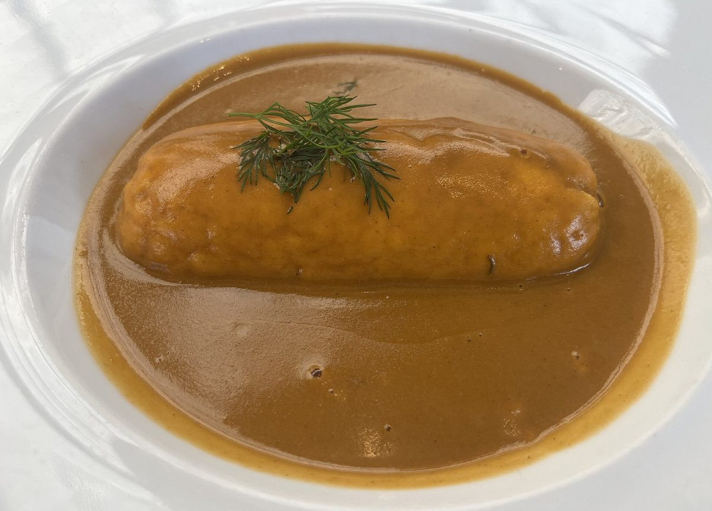
Comment reconnaître un vrai bouchon
- Le label, quand il y en a un. Deux autocollants existent, celui des Bouchons Lyonnais et celui des Authentiques, à l'effigie de Gnafron. Ni l'un ni l'autre n'est obligatoire, et son absence ne condamne pas une maison.
- L'ardoise. Le plat du jour est écrit à la main et change. Une carte plastifiée trilingue avec photos est un signal, et pas un bon.
- Le pot lyonnais. Une bouteille épaisse de 46 centilitres, à fond lourd, servie au verre. C'est l'unité de mesure du bouchon.
- Le comptoir. Un vrai bouchon a un comptoir où l'on peut s'accouder et parler au patron. C'est là que la salle se règle.
- Les abats. Tablier de sapeur, tête de veau, foie de veau, gâteau de foies de volaille. Une carte de bouchon sans abats n'est pas une carte de bouchon.
- L'addition. Entre 30 et 45 € par personne. Beaucoup moins, la matière première suit rarement ; beaucoup plus, on n'est plus dans un bouchon.
Questions fréquentes
Qu'est-ce qu'un bouchon lyonnais ?
Un bouchon est un restaurant traditionnel lyonnais : cuisine régionale à base d'abats et de charcuterie, produits frais, décor de nappes à carreaux et de bois, service au comptoir et ambiance conviviale. L'appellation n'est pas protégée juridiquement, n'importe quel établissement peut donc s'en réclamer. C'est précisément pour cela que deux labels concurrents existent.
Combien y a-t-il de labels de bouchons lyonnais ?
Deux, et c'est la principale source de confusion. Les Authentiques Bouchons Lyonnais est décerné depuis 1997 par l'Association de défense des bouchons lyonnais, et se reconnaît à un autocollant représentant Gnafron un verre à la main ; une vingtaine de maisons le portent. Les Bouchons Lyonnais est une association loi 1901 et un label créés en novembre 2012 par la Commission Tourisme de la CCI de Lyon avec ONLYLYON Tourisme ; il compte 23 établissements en avril 2026. Les deux associations, longtemps rivales, se sont rapprochées en octobre 2023.
Combien coûte un repas dans un bouchon lyonnais ?
Comptez 30 à 45 € par personne pour une entrée, un plat et un dessert, sans le vin. Les maisons les plus abordables de cette sélection tournent autour de 30 à 33 €, les plus chères autour de 45 €. Le pot lyonnais, servi au verre, reste l'un des meilleurs rapports qualité prix de la restauration française.
Quels sont les plats incontournables d'un bouchon ?
La quenelle de brochet sauce Nantua, le tablier de sapeur, la salade lyonnaise, la cervelle de canut, l'andouillette, le saucisson brioché, les grattons et la rosette. Précision utile : le tablier de sapeur est du gras-double, c'est-à-dire de la panse de bœuf marinée puis panée, et non de la cervelle de veau.
Quel est le meilleur bouchon lyonnais ?
Le prix Florent-Dessus 2025, décerné par les Authentiques Bouchons Lyonnais, est allé au Café Lobut, cours Tolstoï à Villeurbanne. C'est la seule distinction annuelle qui fasse autorité dans la profession. Pour le reste, il n'existe pas un meilleur bouchon mais une vingtaine de maisons sérieuses, dont plusieurs ne portent aucun label.
Un bouchon sans label est-il un faux bouchon ?
Non. Quatre des dix maisons de cette sélection, dont Le Garet et Chez Hugon, ne figurent sur aucune des deux listes officielles, alors qu'elles comptent parmi les plus recommandées de la ville par les chefs et la presse locale. Un label est un engagement volontaire et payant : ne pas l'avoir demandé ne dit rien de la cuisine. À l'inverse, l'absence totale de label, d'ardoise et d'abats sur une carte trilingue en dit long.
Sources
Labels, listes d'établissements, adresses et distinctions relevés le 31 août 2026 sur les pages ci-dessous.
- Les Bouchons Lyonnais, liste officielle des maisons labellisées.
- Les Bouchons Lyonnais (label), création en novembre 2012 et nombre d'établissements.
- Tribune de Lyon, le Café Lobut lauréat du prix Florent-Dessus 2025.
- Lyon Entreprises, la rivalité entre les deux labels.
- Petit Paumé, liste des maisons portant le label Authentiques.
- Tablier de sapeur, composition et préparation du plat.
Une maison qui a changé de mains, un label obtenu ou perdu, une adresse fausse, un prix à jour : signalez-le nous. Les corrections sont datées sur la page.
À lire aussi
L'Alsace tient l'équivalent lyonnais du bouchon, sans le système de labels : nos 7 winstubs authentiques de Strasbourg.
À lire aussi
Pour sortir du bouchon sans quitter la ville, notre guide Où manger à Lyon réunit quinze tables vérifiées, des quatre maisons à deux étoiles aux adresses de quartier.
À l'échelle du pays, notre palmarès des 15 meilleurs restaurants de France en 2026 réunit les tables qui ont marqué l'année. Pour la capitale, les 25 meilleurs restaurants de Paris couvrent les palaces comme les bistrots. Et pour la matinée, notre guide du meilleur brunch à Paris passe douze adresses au crible.
Les photographies d'établissement sont fournies par les maisons ou par l'Office de tourisme de Lyon, et publiées avec leur accord. Toute maison souhaitant le retrait d'une image peut nous écrire : elle est retirée sans délai. Aucune des maisons citées dans cet article n'a été visitée par la rédaction à ce jour. Les notes sur 20 de notre grille viendront avec nos visites.